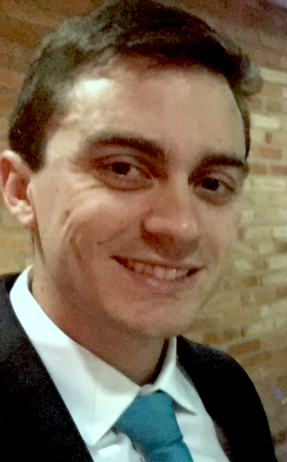

Conheça um pouco sobre mim
 Tenho 29 anos, sou natural de Campinas, interior de São Paulo, onde morei até os 11 anos de idade e depois me mudei para Valinhos, uma cidade com menos de 150 mil habitantes.
Tenho 29 anos, no 3º ano do Ensino Médio fui aprovado em algumas universidades (UNESP, USP e UFSCAR) no curso de Engenharia Elétrica, mas preferi não cursar, pois não tinha certeza se era o curso que eu gostaria de fazer.
Então, resolvi fazer um curso pré-vestibular, quando tive um professor que me esclareceu muito as ideias e me indicou o caminho da Estatística.

Em 2009, comecei a cursar Estatística na Unicamp, um curso muito fascinante, mas ao mesmo tempo muito desafiador para um adolescente que acabara de sair do Ensino Médio com uma cabeça ainda não completamente formada.
Ensino Superior, o marco do começo da mudança.
A faculdade não me fez crescer apenas com informação, mas me fez crescer pessoalmente. Sou uma pessoa que sempre tive facilidade para aprender, então não precisava estudar muito para tirar boas notas na escola. Logo que cheguei na faculdade, percebi que o cenário era outro.
Na universidade, foi necessário desenvolver disciplina, coragem, resiliência, curiosidade, além da fome por conhecimento. Hoje, sou uma pessoa que não cansa de se atualizar e tem muita vontade por novas competências.
Possuo habilidades em diversas áreas de conhecimento adquiridas através de cursos online como Udemy, Coursera, Khan Academy, Cognitive Class, e cursos presenciais como Infomev e Fundação Getúlio Vargas.
As habilidades vão desde desenvolvimento web (como este site desenvolvido por mim), programação SAS, SQL, Python e R, certificado Six Sigma: Green Belt, até áreas de conhecimento que são tendência no mercado como Data Science e Machine Learning, esta última com diversos cursos online com o renomado Andrew Yan-Tak Ng.
"There is no free lunch".
Assim como na economia e estatística, na vida real também não há almoço de graça. Eu comecei a trabalhar com 17 anos em uma farmácia que minha mãe havia montado, por ter enxergado uma oportunidade de negócio.
Os tempos não eram muito fáceis financeiramente, então além de ter conseguido a bolsa de estudos para fazer o curso pré-vestibular quase de graça, tinha que conciliar os estudos com o trabalho, inclusive aos fins de semana. E assim continuou até o 1º ano da faculdade.
De Novembro/2010 à Fevereiro/2012
Passada a pior fase, consegui me distanciar um pouco do trabalho e dar mais foco a faculdade. Mas ainda assim, como gostava de ter o meu dinheiro e não depender de ninguém, procurei o meu primeiro emprego de verdade. Foi quando fui contratado pela IBM para trabalhar no backoffice.
Ainda que não houvesse muita afinidade com o meu curso e com o que eu planejava para a minha carreira, foi uma experiência fabulosa, pois eu pude adquirir bastante conhecimento sobre o ambiente coorporativo, além de ter tido um real contato com a língua inglesa, ao ter contato apenas com clientes dos EUA e Canadá.
Dois mil e quatorze, um dos anos mais incríveis da minha vida.
No ano da copa no Brasil, resolvi sair do país, conhecer uma nova cultura, fazer novas amizades, continuar praticando o inglês e ter minha primeira experiência morando sozinho.
Por meio do projeto UNIGOU, do Instituto Tcheco-Brasileiro para Cooperação Acadêmica (INCBAC), tive o prazer de poder morar quase 3 meses em Praga, República Tcheca e poder estagiar na Faculdade de Engenharia Elétrica, no laboratório de diagnósticos de sistemas fotovoltaicos.
A experiência foi fantástica, pois além de poder morar em um país com uma cultura muito diferente, pude realizar um ótimo trabalho mediante a coleta de dados de sistemas fotovoltaicos e a devida análise estatística, a fim de identificar possíveis fraudes. Trabalho este que me rendeu ótima recomendação da Sra. Ladislava Černá que foram registradas nesta carta.
De Junho/2014 à Janeiro/2018
Quando voltei ao Brasil, comecei a procurar estágio e logo fui contratado pelo Itaú-Unibanco para trabalhar na área de planejamento de cobrança de crédito imobiliário. Tenho só a agradecer por essa área, pois foi nela que comecei realmente a me formar um profissional e adquiri muito conhecimento com a prática.
Em novembro de 2014, fui aprovado em 2 programas de Trainee dentro do Itaú, o coorporativo e umaoutra espécie de trainee mais específico para a área de crédito e cobrança. Como já estava trabalhando na área, resolvi aceitar a segunda oportunidade.
Durante 1 ano, participei de rotações por todas as áreas que envolvem todo o ciclo de crédito, desde a concessão à cobrança. Foi a ano muito intenso, do qual só tenho boas lembranças.
Em janeiro de 2017, fui convidado a participar de um desafio para incorporar a área de Business Ingelligence da área de Wealth Management, a qual estava crescendo muito e ganhando muita visibilidade. Foi o período da minha vida que mais me criou desafios, dos quais sempre pude tirar o melhor de cada situação para continuar crescendo profissionalmente e pessoalmente
Por fim, hoje me encontro em uma situação ímpar na minha vida, na qual continuo procurando desafios para poder prosperar na carreira, continuar aprendendo e crescendo sempre, e este foi o motivo principal para eu tirar este site do papel que já estava parado há muito tempo.